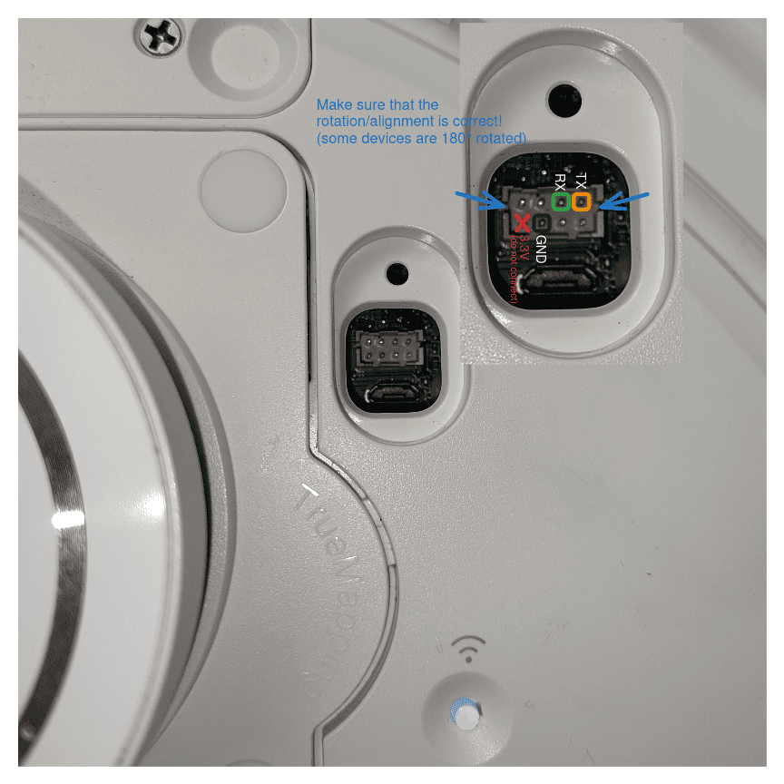

Certificate Unpinning on Ecovacs Bot¶
Disclaimer
Accessing and modifying your Ecovacs bot is risky and may permanently damage your device. These steps may void your warranty or violate your terms of service, and Ecovacs may refuse support for modified devices. Proceed entirely at your own risk!
Note
These instructions were tested only on a T10 PLUS. Details may differ on other models.
This guide explains two approaches to enable your Ecovacs bot to trust a self-signed certificate for use with a self-hosted Bumper server:
- Option 1 (recommended, safer): replace certificate files on the bot - no firmware modification required.
- Option 2 (advanced, unfinished): extract, modify, and reflash the root filesystem for deeper changes.
🟢 Option 1: Simple Certificate Replacement¶
This method only updates certificate files on the device.
No firmware unpacking or flashing is required.
1. Start UART Console (on host)¶
Connect to the bot's UART serial port.
Note
Adjust parameters as needed:
/dev/ttyACM0: device name may differ--log / --log-file: optional, remove if you do not want logs
With picocom:
Or with tio:
tio /dev/ttyACM0 --flow none -b 115200 --log --log-file ./b-capture-"$(date --iso-8601=seconds)".log
| T10 PLUS UART | EXT-SOURCE UART |
|---|---|
 |
 |

UART voltage
Never connect 5V to your UART adapter.
2. Interrupt Boot and Enter Shell (on bot)¶
On startup, interrupt into Hobot (press any key), then boot with updated bootargs:
Note
On some bots you need to hit a specific key mentioned during the boot-up process like:
Sometimes picocom does not work; in that case, try minicom.
Keep pressing your key (e.g. CTRL+C) during the boot process until it is interrupted.
3. Initialize System Resources (on bot)¶
Mount volumes and start required services:
export TERM=xterm-256color
mount -a
/etc/rc.d/pre_boot.sh start
/etc/rc.d/mount_data.sh start
/etc/rc.d/post_boot.sh start
/etc/rc.d/load_ko.sh start
/etc/rc.d/time_sync.sh start
Note
On some models the commands above fail. In that case, you can try to manually
mount data by finding the correct partition in the boot logs. During boot,
the partition table is logged on the console and looks similar to:
GPT part: 0, name: uboot, start:0x4000, size:0x2000
GPT part: 1, name: trust, start:0x6000, size:0x2000
GPT part: 2, name: eco, start:0x8000, size:0x3000
GPT part: 3, name: reserve, start:0xb000, size:0x800
GPT part: 4, name: sys, start:0xb800, size:0x1000
GPT part: 5, name: boot1, start:0xc800, size:0x3000
GPT part: 6, name: rootfs1, start:0xf800, size:0x40000
GPT part: 7, name: boot2, start:0x4f800, size:0x3000
GPT part: 8, name: rootfs2, start:0x52800, size:0x40000
GPT part: 9, name: data, start:0x92800, size:0x5b7df
Identify the data partition (in the above example, index 9), add 1 to the
index, and check for the device with ls /dev/rkflash0pX (replace X with
your index; in the example below, /dev/rkflash0p10).
If the device exists, confirm it is the data filesystem before continuing.
fsck.ext4 -y automatically approves filesystem repairs. If you proceed, you can mount it with:
4. Replace Certificates (on bot)¶
Note
Certificate changes made in this step may be reverted by a factory reset or firmware update. It is recommended to first connect your bot to the official Ecovacs cloud and complete the initial setup before replacing the certificates. If you ever reset or update the bot, you will need to repeat these certificate replacement steps.
After running the above scripts, /data is mounted. You can update the certificate files manually, or use the helper script from the host.
Option A: Helper script (recommended)¶
The script writes the files over the existing UART shell session, so complete
steps 1-3 first and make sure /data is mounted. Close
picocom/tio/minicom before running it (only one program can hold the
serial port), then reopen your terminal if you want to verify output on the bot.
On the host:
python3 -m venv .venv
source .venv/bin/activate
python3 -m pip install pyserial
python3 scripts/device/install-bot-certs-serial.py \
--port /dev/ttyACM0 \
--baud 115200 \
--ca ./certs/ca.crt \
--bumper ./certs/bumper.crt
The script overwrites /data/ca.crt and /data/ca-certificates/ca.pem with
ca.crt, and appends a marked Bumper block (bumper.crt, then ca.crt) to
/data/ca-certificates/ca-certificates.crt. Re-running replaces its previous
marked block to avoid duplicates. Verify the
BUMPER_WROTE/BUMPER_APPENDED/BUMPER_DONE markers on the bot, then reboot.
Option B: Manual update¶
On your host, open the following files in a text editor:
./certs/ca.crt./certs/bumper.crt
On the bot (UART shell), use an editor like vi or cat > to paste the contents into the correct files:
- Overwrite
/data/ca.crtwith the contents of./certs/ca.crt - Overwrite
/data/ca-certificates/ca.pemwith the contents of./certs/ca.crt - For
/data/ca-certificates/ca-certificates.crt, append the contents of./certs/bumper.crtand then./certs/ca.crtto the end of the file (do not remove existing entries; just add these two certs at the end, in this order)
Tip
You can use vi /data/ca-certificates/ca-certificates.crt and paste at the end,
or append with cat >> /data/ca-certificates/ca-certificates.crt.
Make sure to save and exit after pasting.
Your bot should now trust your self-signed certificates. Reboot and test connectivity to your Bumper server.
🟡 Option 2: Full Root Filesystem Modification (Advanced)¶
Not ready
This section is incomplete and not fully tested. Proceed only if you know what you are doing.
More research/reverse engineering is required, especially for step
4. Flash Modified Rootfs Back to Bot -> b. Download and Flash on Bot.
If the simple method does not work, you may need to modify the root filesystem. This is riskier and can brick your device if done incorrectly.
1. (Optional) Setup WiFi (on bot)¶
If you need network access on the bot, set up WiFi:
a. Load WiFi Firmware¶
b. Connect to WiFi¶
Note
Replace placeholders with your actual values:
<YOUR_SSID><YOUR_WIFI_PASSWORD><YOUR_BOT_IP>(e.g., 192.168.112.57)<YOUR_GATEWAY_IP>(e.g., 192.168.112.1)
mkdir -p /tmp/wpa_ctrl
echo "ctrl_interface=/tmp/wpa_ctrl" > /tmp/wpa_supplicant.conf
wpa_passphrase '<YOUR_SSID>' '<YOUR_WIFI_PASSWORD>' >> /tmp/wpa_supplicant.conf
wpa_supplicant -B -i wlan0 -c /tmp/wpa_supplicant.conf -f /tmp/wpa.log -s
ifconfig wlan0 '<YOUR_BOT_IP>' netmask 255.255.255.0 up
route add default gw '<YOUR_GATEWAY_IP>'
2. Create Root Filesystem Dump (on bot)¶
a. Dump Root Filesystem¶
b. (Optional) Backup Other Partitions¶
dd if=/dev/ubi1_0 of=/tmp/data.img bs=1M
dd if=/dev/ubi2_0 of=/tmp/sysinfo.img bs=1M
dd if=/dev/ubi3_0 of=/tmp/ai_model.img bs=1M
tar -czf /tmp/data.tar.gz -C /data .
c. Serve Files for Download¶
3. Download and Extract Root Filesystem Dump (on host)¶
a. Download Root Filesystem to Host¶
Note
Replace <YOUR_BOT_IP> with your bot's actual IP address.
b. (Optional) Download Other Partitions to Host¶
curl -Lo data.img http://<YOUR_BOT_IP>:8080/tmp/data.img
curl -Lo sysinfo.img http://<YOUR_BOT_IP>:8080/tmp/sysinfo.img
curl -Lo ai_model.img http://<YOUR_BOT_IP>:8080/tmp/ai_model.img
curl -Lo data.tar.gz http://<YOUR_BOT_IP>:8080/tmp/data.tar.gz
You can extract or inspect these optional backup partitions with tools like ubireader_extract_files, strings, or unsquashfs:
ubireader_extract_files data.img
cat sysinfo.img | strings
unsquashfs -d ai_model ./ai_model.img
mkdir -p data && tar -xzf ./data.tar.gz -C data
c. Extract and Modify Rootfs¶
unsquashfs -d rootfs ./rootfs.img
# ... edit rootfs as needed ...
mksquashfs rootfs rootfs_mod.img -noappend -root-owned -p '/dev d 755 0 0' -p '/dev/console c 600 0 0 5 1'
4. Flash Modified Rootfs Back to Bot¶
a. Start HTTP Server on Host¶
b. Download and Flash on Bot¶
Not ready
This step is not finished. When starting into boot_mode2, the root password is required.
Further reverse engineering is needed. The following commands are unverified and may brick the device.
Note
Replace <YOUR_HOST_IP> with your host's actual IP address.
curl -Lo /data/rootfs_mod.img http://<YOUR_HOST_IP>:8080/rootfs_mod.img
ubi_atomic_update_leb /dev/ubi2_0 -i "boot_mode2" -n 0
reboot
ubiupdatevol /dev/ubi4_0 /data/rootfs_mod.img
ubi_atomic_update_leb /dev/ubi2_0 -i "boot_mode1" -n 0
reboot
📝 Notes¶
- Always backup your data before making changes.
- If unsure, use Option 1 first.
- For certificate creation, see Create Certificates.
- For more context, see Architecture and App Certificate Unpinning.
📚 References¶
- https://dontvacuum.me/talks/37c3-2023/37c3-vacuuming-and-mowing.pdf
- https://dontvacuum.me/talks/DEFCON32/DEFCON32_reveng_hacking_ecovacs_robots.pdf
- https://media.ccc.de/v/37c3-11943-sucking_dust_and_cutting_grass_reversing_robots_and_bypassing_security#t=2028
- https://github.com/itsjfx/ecovacs-hacking/blob/master/x1_omni.md
- https://dontvacuum.me/